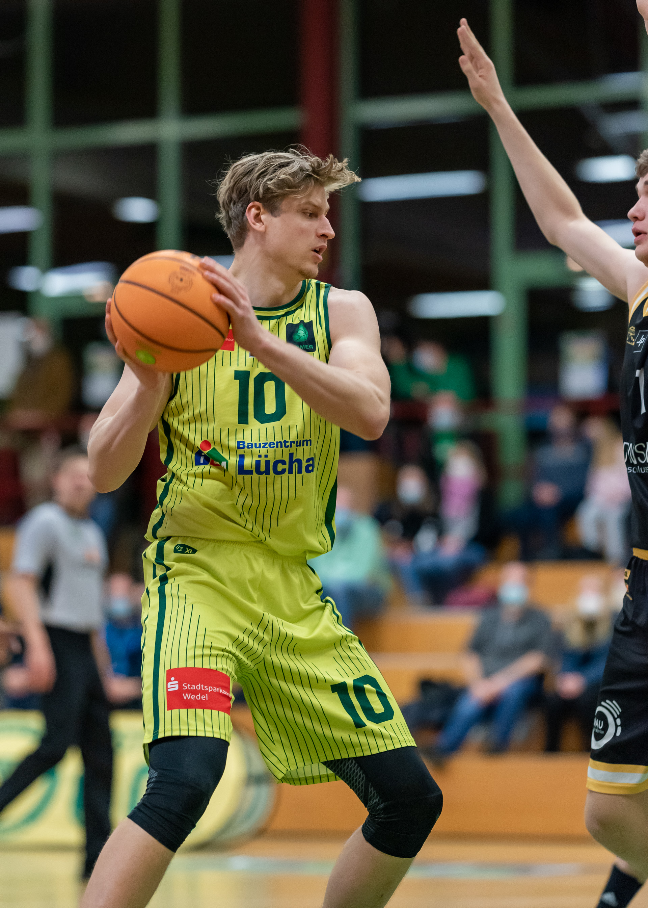

About
Yngve Jentz was born in Henstedt-Ulzburg in 1997. His parents showed him and his siblings early on how valuable traveling and getting to know foreign cultures can be. Growing up with this perspective, it was not difficult for Yngve to decide to spend the 10th grade in the USA. At Eastern Greene High School near Indianapolis, he was not only captivated by American culture, but also adapted to the idea of athletic performance.
The then 15-year-old trained in basketball up to twice a day, where he developed a passion for the sport that still fascinates him today. Back in Germany, he continued to pursue his goals and began playing in the junior national league for the Hamburg Sharks. With the success behind him, Yngve completed his high school diploma in 2015 in a bilingual profile.
He then committed himself to the Hamburg Basketball Association for a year as part of the Federal Volunteer Service. He coached teams and promoted the sport of basketball in German-speaking countries. He then spent a year focusing on day-to-day training and playing.
With his brother as a role model, Yngve initially leaned towards a business degree, but decided to study Chinese economics and culture. This includes aspects of business administration and economics with a focus on China as a tradition-rich people's republic and market of the future. Also on the ground in 2019, he not only tried to get to know the Chinese culture, but also completed a language intensive course in Mandarin. Since the beginning of his studies in 2017, Yngve additionally gained practical experience as a working student in purchasing at tesa Werk Hamburg GmbH, as well as Tchibo GmbH in sales.
He decided against a master's degree in business administration and in favor of the MBA at HMS based on the practical orientation. His previous experience in companies had shown him how difficult it sometimes is for successful corporations to integrate new media and innovations into the corporate strategy. For this problem the study at the HMS seems to be an adequate solution. When Yngve is not on the basketball court, he likes to cook or plan the next trip. One thing is certain: as soon as a driving business idea develops, he will consistently pursue it.
Athletic Career

Yngve Jentz is responsible for the hardest work at SC Rist - literally. Because when the 24-year-old brings his well-trained 107 kilograms into position under the baskets, it is not against airy resistance, but in wrestling with giants who often add even more body weight. Elbowing, more or less hidden pushing, pushing away and hooking are part of the daily business of centers. However, all this is not an end in itself, but rather to make hits possible, to score or to prevent them on the other side.
Whether in the "first five" or coming off the bench, the 2.07-meter center is and remains an important part of the Wedel squad. "Yngve shows very great reliability in everyday training and in the game. We are happy that he is still with us," says Stephan Blode. "He is still a young player, has stabilized at the Bundesliga level in the last three years and has shown good development," said the Rist coach. "Yngve has made another leap forward," also thinks sporting director Christoph Roquette. "He has put a big part on it in defense, adopted and implemented the defensive style - aggressive and standing tall - very well. On defense, he has made the biggest leap. That gives us stability," praised the former class center, who also credits Jentz with adding another boost on offense, as well as being more deliberate with the five fouls awarded per game.
"It's also always important to be self-reflective. I'm obviously a role player in the constellation we have there. The focus is not on me scoring at all costs," says the 24-year-old himself. He can help the team above all - as mentioned - in the defensive work and rebounding, says Jentz.
He likes the Wedel concept of "relying on young people and giving them the opportunity to develop," says Jentz, who began his basketball career at SC Poppenbüttel and later played for BG Harburg Hittfeld, Itzehoe and Bergedorf. Similar to his five-way teammate Aurimas Adomaitis, the 24-year-old is busy. Competitive sports, graduation, work life. "There, people have always been considerate of me when I had an appointment at university and might have been absent because of that. They were always very understanding. So it was an easy decision for me," he says of his decision to stay with SC Rist.
Such a tight program is not for everyone, but it is for Jentz: "You need a certain amount of coordination and the will to do it all. But since I really enjoy it all and am serious about it, it's actually easy," he emphasizes. And Blode explains: "Of course, this can only be done in consultation. Of course, we expect a lot from the players. We expect them to be present at all times," says the coach, but concedes that "when it's appropriate, you also find individual solutions." That there are "other things that fall off during the season," as Jentz puts it, because "you also have to sit down on weekends to do something for college," goes without saying. With his basketball, study and work commitments, there's not much time left for other recreational activities. "But if your heart is in it and you're up for it, it's not a big cut," says Jentz. He's a hard worker, and not just when it comes to battling for position in the zone.
More about my athletic Career